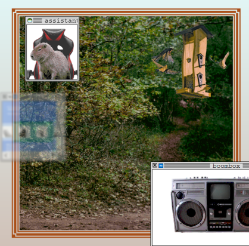

|
hello my name is d.h. croasdill & this is my portfolio.
it's mostly for like, job stuff. but i hope you like it Real GamesVideogamesfind me on: |
Look:
I was born in a city in Michigan. Then I lived at the bottom of the Puget Sound. Now I live in the Big City, the Big City which everyone knows & loves. Truly mine is a rich tapestry of experience. When I lived on the west coast, I used to wake up with mysterious, rust-colored stains on my hands. I was sure I was cursed. I'm still afraid of magical spells, but that's my choice. I have a BA in Freud & poetry. I have an MFA in game design & being tired for years. Despite my charms, I have had three polemical essays written about my work, & I can claim a few ornery bullet points as well. I was honorably mentioned at IGF & won some awards in high school for being eccentric. I'm extremely employable. I'm not bragging, it's just the truth. You should give it a shot. Checkers 2: The Sequel to Checkers: It's About Girls This Time
2019, tabletop roleplaying gamesolo project Checkers 2 was the first full game I completed on my own, & frankly I have yet to top it. It's a very small romance tabletop roleplaying game which takes a slightly modified game of checkers as a metaphor for two lesbians flirting. I used the game as a way of exploring a few theoretical problems I had come up against when just starting out in game design. You can click the following bullet points to learn more about two of these problems. How can losing be fun?What is the function of a loss? The western sense of competition can be observed in history (the ancient Greek notion of arete, glory in competition), theory (Smith's invisible hand), & practice (look no further than the cultures which arise around sports) as a fulcrum for establishing moral judgments. A victor is ordained as morally superior, essentially correct, & a loser is just that. A loser, a bum, something worth less. But the frivolousness of play allows us to mirthfully experiment with what dialect to winner & loser are producing. It needn't always be so dire. In Checkers 2, I experimented with building a game in such a way that the winner & loser are not in Hegel's fight to the death, producing the master-slave dialectic, but rather in a mutually enjoyable entanglement, producing a queered top-bottom dialectic. In Checkers 2, the only textual consequence of losing is that your character won't take the lead in their flirting scenario. Which, I am lead to believe, is a preferable position for many people. I've watched numerous players elect to lose the game, because it creates the personal narrative which is most to their taste. How can a game be queer?When I was making Checkers 2, it didn't seem enough to call the game queer just because it was about queer people, or made by a queer person. Something about the essential procedures of the game had to be making an argument about queerness. & not queer in that silly academic sense, where it's about as complicated & theoretical a concept as modernism. What goes into making a game about the vulgar, for-real, anecdotal experience of being a homosexual? Moreover, how do you keep it from drifting into becoming the trauma-porn of a Serious Game? These are theoretical questions with a pleasurably practical answer— keep it horny. To be horny on a formal level is to build your rules in such a way that players have to be taking horny actions. If there's one thing to be learned from the current breadth of queer identities, it's that sexuality cannot effectively be universalized. Ultimately, Checkers 2 exposes more about my own relationship to queerness than anything about queerness overall. It is worth noting that despite these particularities of the rules, once the game gets into the hands of other players, they tend to have a blast projecting their own particularities. The game was completed with the support of The Evergreen State College's Designing for Social Good program. It has been exhibited at TESC in Olympia, Washington, as well as at the Wonderville venue in Brooklyn, New York. A new, expanded edition is currently in progress. Signs & Wonders
2020, tabletop roleplaying gameDesigned in collaboration with Robin Gibson my roles: design, writing, layout, illustration, facilitation Signs & Wonders is a tabletop roleplaying game where players utilize a tarot deck to imagine the events leading up to a cataclysm of their invention. The game begins with deciding what the inevitable catastrophe is, & then players spend the next 1-2 hours interpreting the signals & portents which lead up to the end of everything. Robin & I were co-designers in every aspect of the game. The rules, the actual prose, the collages, the layout, we each touched every aspect of the game in some way. The game was made during the lead up to the first outbreaks of COVID-19 in the United States, & is also an earnest expression of grief in the slow crawl of climate change. no smoke
2021, live action roleplaying gameDesigned in collaboration with Beau McGhee my roles: design, writing, layout, illustration no smoke is a very, very short live action roleplaying game about Icarus, the sun, & (not) kissing. Originally made as 200 word TTRPG, the game found a new home in a trifold zine when we were invited to exhibit it at the Wonderville venue in Brooklyn, New York. Beau & I split the design, each covering roughly half of the content, & I was additionally responsible for layout & illustration. Beau & I met during graduate school, & together we have developed a specialization in producing games about romance & sexuality. no smoke is one of our most easily digestible works, & it's almost as fun to read as it is to play (almost). Under Advisement
2021, videocall roleplayingDesigned in collaboration with Dylan Cruz, Katie McLain, & Jen Bourke my roles: design, writing, layout, facilitation dumpling.love
2021-2022 (on going), browser gameDesigned in collaboration with Mut Moochi, Fran Rojo, Darwin Vickers, Ty Cobb, Jen Bourke, & The Parks Staff my roles: design, narrative/writing, UI, visual design, research, facilitation  dumpling.love is a browser-based adventure game which revels in the materiality of the internet. When our team first began developing the game, we were extraordinarily interested in what makes a website a website. We were also interested in experimenting with developing a game within a flat hierarchy; there we no project managers or defined roles, we each volunteered what we were able to. We won some recognition for our efforts when dumpling.love received honorable mentions at the 2022 Independent Games Festival. last november
2019, interactive poem collection
solo project narrow are the vessels
2021, interactive poem collection
solo project In Space, No One Can Hear You Bark
2021, interactive fictionMade in collaboration with Alessia Ianni-Palarchio, Jason Guisao, & Sam Sorensen my roles: design, narrative/writing, UI, facilitation fruitflesh to her muse
2022, interactive poem
solo project
bubmus
|